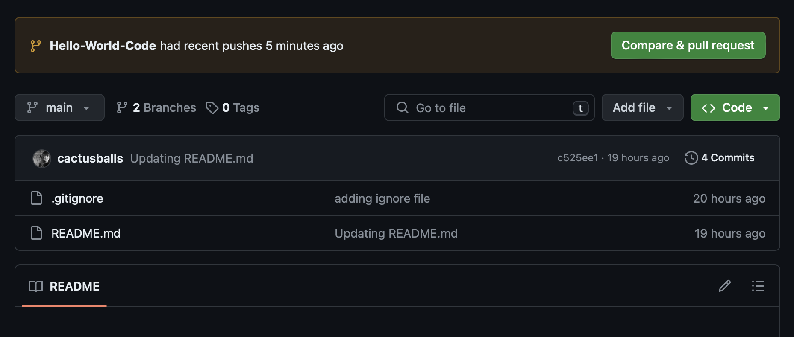
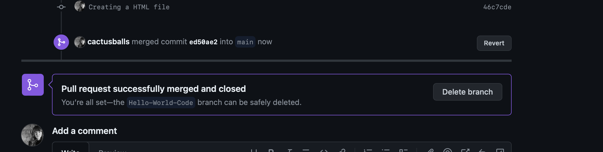

Demonstrating knowledge and use of Git/GitHub commands
In this screenshot I show how I created a new branch; "Hello-World-Code", adding a new file to that branch; "index.html", checked the status and added a commit with a meaningful message.

I then pushed that code to GitHub from VSCode, creating a pull request within my GitHub for the new branch and code.

Once I had opened the PR I then merged the branch to main and deleted it.

.gitignore & requirements.txt
A .gitgnore file tells Git which files should be ignored/not pushed to the remote repository. They're normally reserved for temporary files, generated files and those that contain passwords. You can create one by following these steps:
- Open your terminal and navigate to the root directory of the project that needs the .gitignore file
- Code: 'touch .gitignore'
- If the command has succeeded there will be no output
- Open the .gitignore file and specify the files you want Git to ignore
- Commit and push as normal
A requirements.txt file tells a user which frameworks and libraries they'll need to use when working on a Python project.You can create one by following these steps:
- Open your terminal and navigate to the root directory of the Python project that needs a requirements.txt file
- Code: 'pip freeze > requirements.txt'. to generate a file that has the currently installed libraries and frameworks
- If needed you can edit the file to only include the necessary libraries and frameworks
- Commit and push as normal